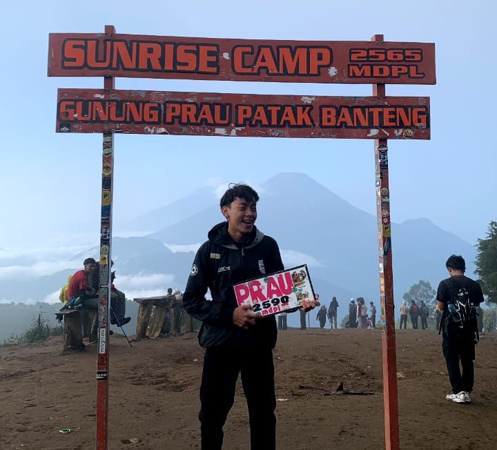

Hi,
I'mKayis Bintang Saputra
a Web Developer (amiin)
Saya adalah seorang mahasiswa POLSA yang sedang belajar membuat website dengan Bootstrap 4.6. Website ini dibuat sebagai proyek UAS untuk mata kuliah Desain Web. Saya berharap website ini bisa menjadi sarana manajemen dan publikasi kegiatan mahasiswa secara online.
Keahlian & Pengalaman

Bootstrap
Bisa menggunakan Bootstrap 4.6 untuk membangun website responsif dan modern.
HTML
Bisa menggunakn struktur HTML5 dalam pembuatan elemen web yang semantik dan valid.
CSS
Terampil membuat styling halaman web yang bersih dan konsisten dengan CSS3.

Bartender (Non-Alkohol)
Berpengalaman meracik minuman sehat & kreatif di restoran dengan pelayanan profesional.